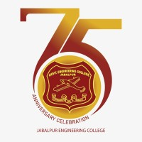
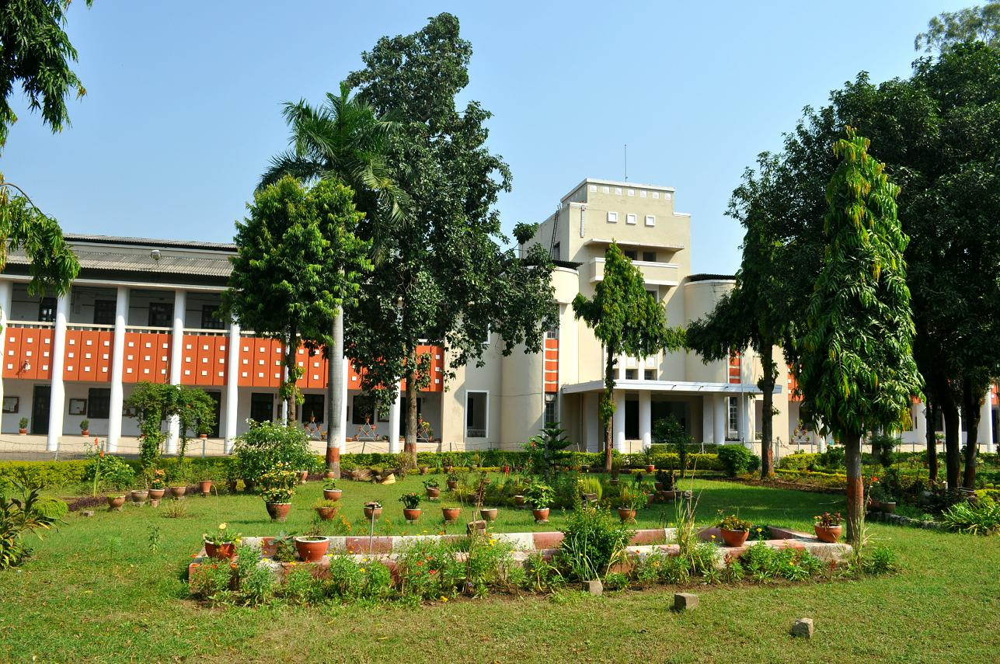
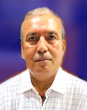
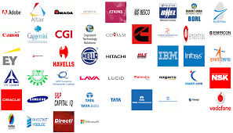
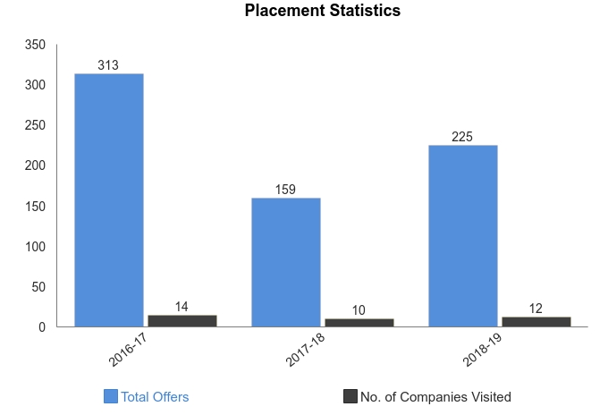

ABOUT COLLEGE
Jabalpur Engineering College, Jabalpur was established on 7 July, 1947 when the entire global chess board was witnessing a dramatic change. It was born just a few months before India broke the shackles of British slavery. This illustrious Institution got the distinction of being the Second Engineering College in India and is the premier institution of Engineering Education in Central India.this college in 2022 completing 75 years going to celebrate Platinum Jublee
 DEPARTMENTS
DEPARTMENTS | Head Of Department |
| DEPARTMENT COMPUTER SCIENCE Engineering | JITENDRA SINGH |
| DEPARTMENT OF IT | AJAY SINGH |
| Department of Electronics Comm. Eng | DR A K MISHRA | Department of Electrical Engineering | DR ANIL KUMAR KORI |
| Department of Civil Engineering | DR RAJEEV CHANDAK |
| Department of Mechanical Engineering | DR B K CHOURSIA |
| Department of Industrial Production | RUCHIKA SAINI |
| Department of Applied Physics | K.K. KUSHWAHA |
| Department of Applied Chemistry | SHILPA SAXENA |
| Department of Applied Mathematics | SATENDRA SINGH |
| Department of Artificial Intelligence and data Science | DR. MP PARSAI |
| Department of Machatronics | MRS AGYA MISHRA |
| Department of Communication Skill | LOVELEEN KAUR |
Our Principal

Dr. Arvind Kumar Sharma
Placements
Jabalpur Engineering College placement observed 12 recruiters participating in the 2019 placements. A total of 225 offers were extended to the students. The highest CTC stood at INR 18 LPA. The CSE branch attracted the highest number of offers across all the streams. In This Year 2022 in This College highest pacage of 53LPA[offcampus] offerred from Atlassians Company and Offcampus 8-15 LPA also offerred from BYZUS, Hackerrank The Average Package was arroun 4.6LPA This Year.
 Achievements
Achievements Mission & Vision INSTITUTION’S EXTRA ORDINARY ACHIEVEMENTS The fierce desire to make this institution a “shrine of excellence” several massive & prestigious projects were achieved due to the untiring CORE (Centre of Relevance & Excellence) by TIFAC (Deptt. of Science & Technology of Govt. of India) CIIILP (Canada India Industry Linkage Project) Renewable Energy park – Govt. of India. CISCO Regional Academy of Networking Programme a project of CISCO USA. Centre for National & Academic Networking for Continuing Education with AICTE. Centre of Fuzzy Logic System by Govt. of India. Indo-Italian Research project (Micro-zonation of selected Cities of India) by Geological Survey Of India STA (State Technical Agency) of “Prime Minister’s Rural Road” Project-Govt. of India and Remote Sensing Centre. Sun Micro System Training Centre, Sun Microsystems (USA) Research Project of Robotics & Manufacturing, Ministry of Science & Technology. Software Technology Park of India, 2 MBPS HSDC Node. Ministry of Information Technology Fuller Energy Awards (State level) Selection M.P. Chamber consultancy clinic of Katni with “impcon” Mini Tool Room, Ministry of Commerce & Industries Government of India. Centre of National Academic Networks for continuing Education with AICTE & Sun Micro systems. DSP Lab, Texas Instruments. ERNET- AICTE Facility for Distance Learning & Digital Library. Remote Sensing Resource Centre. The MOU’s signed with national & international organizations eg. infosys, Wipro, TCS, IBM, CISCO etc for promoting training of students and enhancing enormously the students through campus recruitments and open campus recruitments.